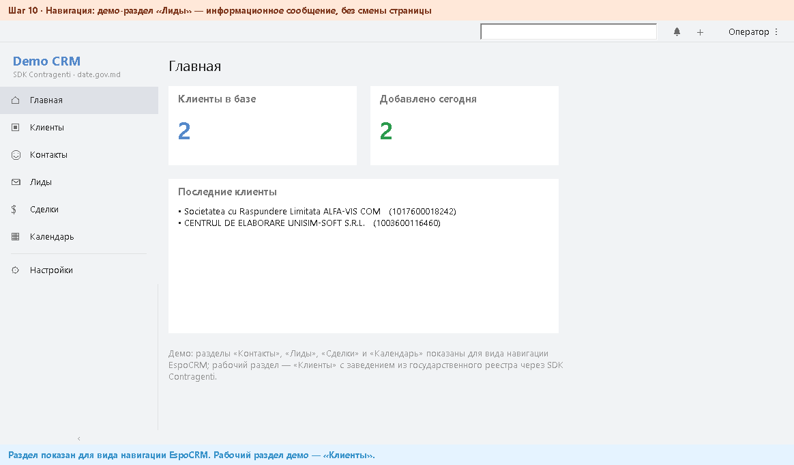
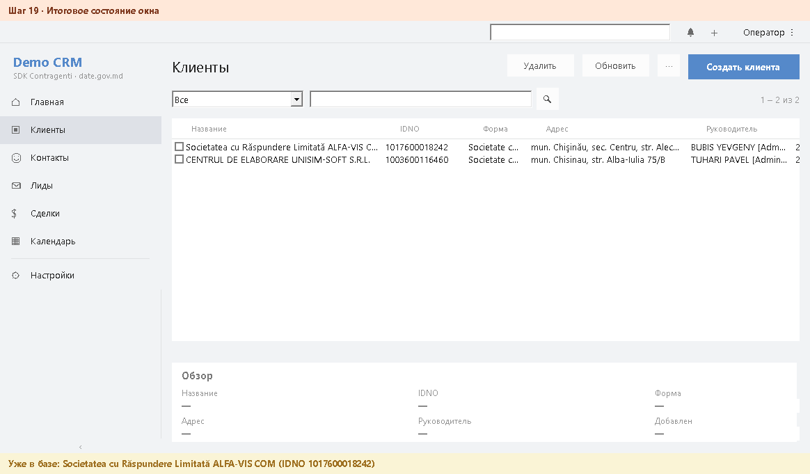

Demo CRM — отчёт GUI-самотеста
Тест выполнен самим приложением: оно вело собственное окно по шагам, рисовало номер шага на плашке и снимало себя через GetFormImage. Шаги 12–15 — реальный вызов SDK: нажата настоящая кнопка «Добавить из реестра», запущен Contragenti (Chrome + date.gov.md); его окна сняты через PrintWindow во время работы.
Launcher: F:\grok\contragents data gov\company_search.py
| # | Шаг | Статус | Проверка | Снимки |
|---|---|---|---|---|
| 01 | Стартовое окно, база пуста | OK | в списке 0, в базе 0 | 01_start.png |
| 02 | Импорт карточки UNISIM-SOFT из XML Contragenti | OK | результат 0, в списке 1, сообщение зелёное=True | 02_import_unisim.png |
| 03 | Импорт карточки ALFA-VIS COM | OK | результат 0, в списке 2 | 03_import_alfavis.png |
| 04 | Повторный импорт UNISIM — отсечён как дубликат | OK | результат 1, в базе 2, сообщение янтарное=True | 04_duplicate.png |
| 05 | Фильтр «ALFA» оставляет одну запись | OK | в списке 1 | 05_filter_alfa.png |
| 06 | Фильтр сброшен — снова две записи | OK | в списке 2 | 06_filter_clear.png |
| 07 | Панель настроек раскрывается внутри окна (без модального диалога) | OK | сообщение: Укажите путь к Contragenti.exe и нажмите «Сохранить». | 07_settings_open.png |
| 08 | Панель настроек скрыта повторным нажатием | OK | 08_settings_close.png | |
| 09 | Навигация: раздел «Главная» с дашлетами (стиль EspoCRM) | OK | 09_home.png | |
| 10 | Навигация: демо-раздел «Лиды» — информационное сообщение, без смены страницы | OK | сообщение: Раздел показан для вида навигации EspoCRM. Рабочий раздел демо — «Клиенты». | 10_nav_demo.png |
| 11 | Навигация: возврат в «Клиенты» | OK | 11_accounts.png | |
| 12 | «Удалить» без выбранной строки — предупреждение, ничего не удалено | OK | в базе 2, сообщение янтарное=True | 12_delete_noselect.png |
| 13 | «Удалить» с выбранной строкой — просьба подтвердить, база не тронута | OK | в базе 2, сообщение янтарное=True | 13_delete_confirm_ask.png |
| 14 | Повторное «Удалить» — клиент ALFA-VIS удалён (останется UNISIM) | OK | в базе 1, в списке 1, сообщение зелёное=True | 14_delete_done.png |
| 15 | Фильтр «ALFA-VIS COM» введён — по нему SDK запустит Contragenti | OK | launcher: F:\grok\contragents data gov\company_search.py | 15_sdk_filter.png |
| 16 | Реальный вызов SDK: Contragenti запущен, нашёл ALFA-VIS (кэш date.gov.md или портал) и вернул XML-карточку | OK | ожидание 2 с, снимков во время работы 3, в базе 1 → 2, сообщение зелёное=True; | 16_sdk_added.png +3 |
| 17 | Карточка из Contragenti в списке CRM (адрес, форма, администратор — данные реестра) | OK | в списке 2 | 17_sdk_list.png |
| 18 | Повторный вызов SDK — та же карточка отсечена как дубликат, база не выросла | OK | ожидание 2 с, в базе 2, сообщение янтарное=True; | 18_sdk_duplicate.png +3 |
| 19 | Итоговое состояние окна | OK | в базе 2 | 19_final.png |
01Стартовое окно, база пуста — OK
в списке 0, в базе 0
Строка сообщений: База клиентов: F:\grok\contragents data gov\crm_delphi\shots_gui\test_clients.db | записей: 0
после шага: 01_start.png

02Импорт карточки UNISIM-SOFT из XML Contragenti — OK
результат 0, в списке 1, сообщение зелёное=True
Строка сообщений: Добавлен клиент: CENTRUL DE ELABORARE UNISIM-SOFT S.R.L. (IDNO 1003600116460)
после шага: 02_import_unisim.png

03Импорт карточки ALFA-VIS COM — OK
результат 0, в списке 2
Строка сообщений: Добавлен клиент: Societatea cu Raspundere Limitata ALFA-VIS COM (IDNO 1017600018242)
после шага: 03_import_alfavis.png

04Повторный импорт UNISIM — отсечён как дубликат — OK
результат 1, в базе 2, сообщение янтарное=True
Строка сообщений: Уже в базе: CENTRUL DE ELABORARE UNISIM-SOFT S.R.L. (IDNO 1003600116460)
после шага: 04_duplicate.png

05Фильтр «ALFA» оставляет одну запись — OK
в списке 1
Строка сообщений: Фильтр «ALFA»: показано 1 из 2
после шага: 05_filter_alfa.png

06Фильтр сброшен — снова две записи — OK
в списке 2
Строка сообщений: Фильтр «ALFA»: показано 1 из 2
после шага: 06_filter_clear.png

07Панель настроек раскрывается внутри окна (без модального диалога) — OK
сообщение: Укажите путь к Contragenti.exe и нажмите «Сохранить».
Строка сообщений: Укажите путь к Contragenti.exe и нажмите «Сохранить».
после шага: 07_settings_open.png

08Панель настроек скрыта повторным нажатием — OK
Строка сообщений: Укажите путь к Contragenti.exe и нажмите «Сохранить».
после шага: 08_settings_close.png

09Навигация: раздел «Главная» с дашлетами (стиль EspoCRM) — OK
Строка сообщений: Укажите путь к Contragenti.exe и нажмите «Сохранить».
после шага: 09_home.png

10Навигация: демо-раздел «Лиды» — информационное сообщение, без смены страницы — OK
сообщение: Раздел показан для вида навигации EspoCRM. Рабочий раздел демо — «Клиенты».
Строка сообщений: Раздел показан для вида навигации EspoCRM. Рабочий раздел демо — «Клиенты».
после шага: 10_nav_demo.png
{kind=link}

11Навигация: возврат в «Клиенты» — OK
Строка сообщений: Раздел показан для вида навигации EspoCRM. Рабочий раздел демо — «Клиенты».
после шага: 11_accounts.png

12«Удалить» без выбранной строки — предупреждение, ничего не удалено — OK
в базе 2, сообщение янтарное=True
Строка сообщений: Выберите клиента в списке, затем нажмите «Удалить».
после шага: 12_delete_noselect.png

13«Удалить» с выбранной строкой — просьба подтвердить, база не тронута — OK
в базе 2, сообщение янтарное=True
Строка сообщений: Удалить «Societatea cu Raspundere Limitata ALFA-VIS COM»? Нажмите «Удалить» ещё раз для подтверждения.
после шага: 13_delete_confirm_ask.png

14Повторное «Удалить» — клиент ALFA-VIS удалён (останется UNISIM) — OK
в базе 1, в списке 1, сообщение зелёное=True
Строка сообщений: Удалён клиент «Societatea cu Raspundere Limitata ALFA-VIS COM». Записей: 1
после шага: 14_delete_done.png

15Фильтр «ALFA-VIS COM» введён — по нему SDK запустит Contragenti — OK
launcher: F:\grok\contragents data gov\company_search.py
Строка сообщений: Фильтр «ALFA-VIS COM»: показано 0 из 1
после шага: 15_sdk_filter.png

16Реальный вызов SDK: Contragenti запущен, нашёл ALFA-VIS (кэш date.gov.md или портал) и вернул XML-карточку — OK
ожидание 2 с, снимков во время работы 3, в базе 1 → 2, сообщение зелёное=True;
Строка сообщений: Добавлен клиент: Societatea cu Răspundere Limitată ALFA-VIS COM (IDNO 1017600018242)
во время работы SDK: 16_sdk_wait_crm.png

во время работы SDK: 16_sdk_3_contragenti_results.png

во время работы SDK: 16_sdk_4_contragenti_card_return.png

после шага: 16_sdk_added.png

17Карточка из Contragenti в списке CRM (адрес, форма, администратор — данные реестра) — OK
в списке 2
Строка сообщений: Добавлен клиент: Societatea cu Răspundere Limitată ALFA-VIS COM (IDNO 1017600018242)
после шага: 17_sdk_list.png

18Повторный вызов SDK — та же карточка отсечена как дубликат, база не выросла — OK
ожидание 2 с, в базе 2, сообщение янтарное=True;
Строка сообщений: Уже в базе: Societatea cu Răspundere Limitată ALFA-VIS COM (IDNO 1017600018242)
во время работы SDK: 18_sdk_wait_crm.png

во время работы SDK: 18_sdk_3_contragenti_results.png

во время работы SDK: 18_sdk_4_contragenti_card_return.png

после шага: 18_sdk_duplicate.png

19Итоговое состояние окна — OK
в базе 2
Строка сообщений: Уже в базе: Societatea cu Răspundere Limitată ALFA-VIS COM (IDNO 1017600018242)
после шага: 19_final.png
{kind=link}
